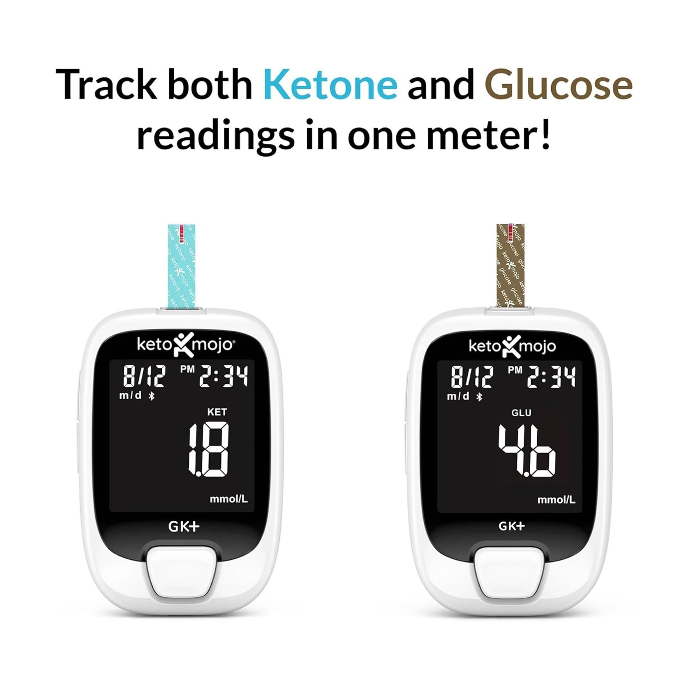
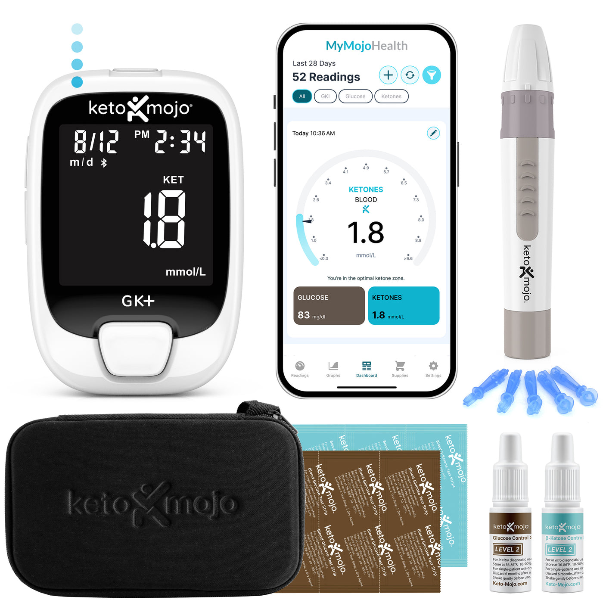
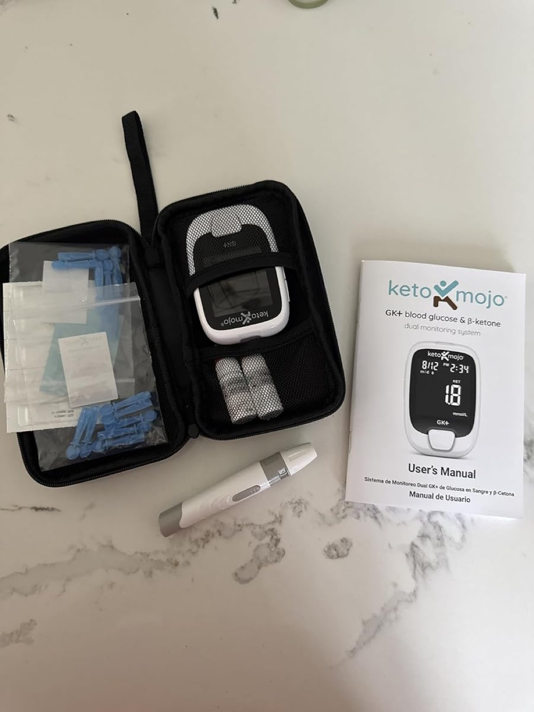
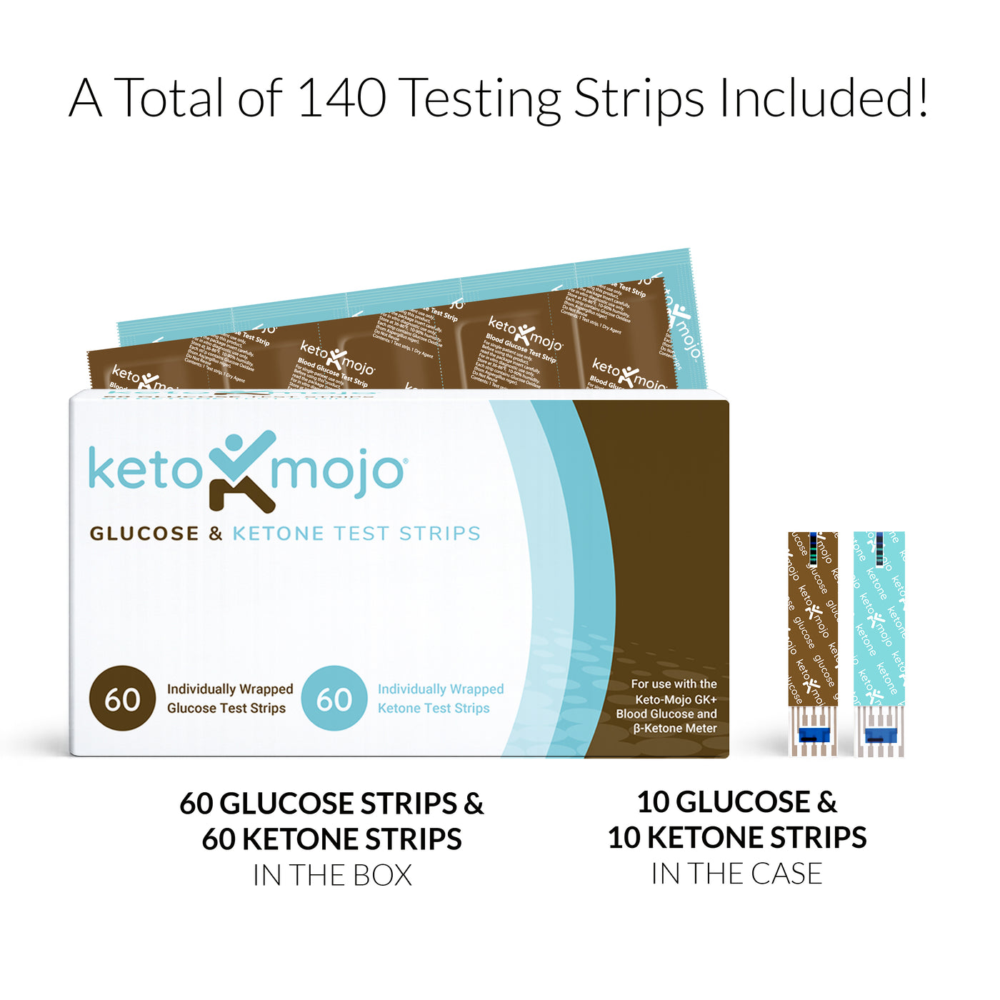
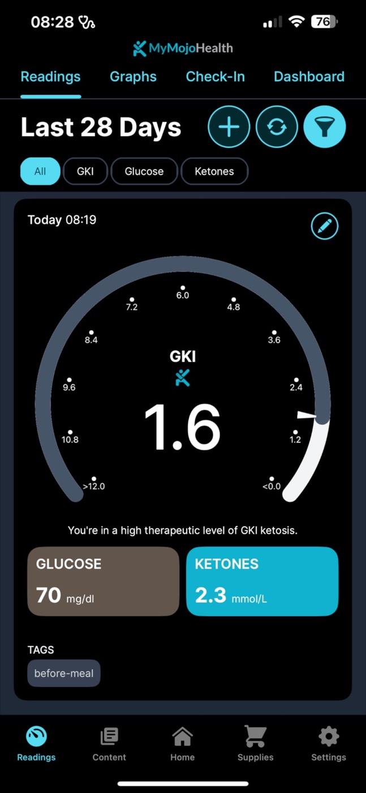

Keto-Mojo GK+ — компактный глюкометр-кетометр. Один прибор, одна капля крови, две метрики за секунды и автоматический индекс GKI. Всё синхронится в бесплатное приложение — удобно вести дневник каждый день и брать с собой в поездку.

У Keto-Mojo нет «зоопарка» моделей: сегодня бренд сфокусирован на одном флагманском мониторе GK+ (раньше был бюджетный не-Bluetooth Classic, сейчас он вытеснен). Различаются только комплекты, расходники и аксессуары вокруг него.
Кровяные β-кетоны и глюкоза одним прибором — просто вставляешь нужную полоску. Это точнее полосок для мочи и дыхательных анализаторов.
Индекс «глюкоза–кетоны» (Glucose Ketone Index) прибор и приложение считают сами — ключевой показатель для терапевтического кето и протоколов голодания.
По Bluetooth замеры улетают в бесплатное приложение MyMojoHealth: тренды, теги (до/после еды), графики. Ежедневный контроль без бумажек.
Клинически проверенная точность в кармане: FDA 510(k) для глюкозы, лабораторные показатели по кетонам. Ниже — фактические характеристики.

Главный запрос — портативность. Здесь Keto-Mojo как раз силён: весь набор живёт в одном жёстком чехле-«очечнике», а питание — обычные батарейки, а не проприетарная зарядка.

Прибор один и тот же — отличается количество расходников и «бонусов». Для «просто попробовать» хватит Essential; если знаете, что будете мерить регулярно, Ultimate выгоднее по цене за полоску.
Сам прибор покупается один раз, а полоски — постоянно. Их берут отдельно: по-отдельности или комбо-упаковкой 60+60 (выгоднее). Полоски подходят только к GK+.

Ориентир по цене за полоску (кетоновые — одни из самых доступных на рынке):
Замеры приходят по Bluetooth, приложение само считает GKI и рисует тренды. Данные можно отдать врачу или тренеру, экспортировать или связать с другими сервисами.

Наглядный циферблат: сразу видно, в какой зоне вы сейчас — оптимальный кетоз, лёгкий, вне кетоза.
Помечайте замеры «до/после еды», «натощак», «тренировка» — потом легко искать закономерности.
Apple Health, Cronometer, Carb Manager и выгрузка в CSV — данные не заперты внутри приложения.
Отправляйте историю замеров врачу или коучу — удобно для терапевтических протоколов и сопровождения.
Проверить, что вы действительно в кетозе, а не «на веру».
Отслеживать GKI и вход в глубокий кетоз по дням.
Протоколы по GKI (в т.ч. под наблюдением врача).
Понять реакцию тела на еду, нагрузку и сон.
Цены — ориентир в USD с официального магазина Keto-Mojo. Стоимость расходников может меняться (акции, комплекты) — точную сумму смотрите по ссылке.